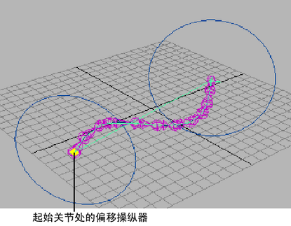

操纵 IK NURBS 样条曲线的 CV
- 选择 NURBS 曲线。
- 启用。
- 启用。
- 在 NURBS 曲线上选择 CV。
提示： 为了更便于操纵曲线，创建曲线 CV 的簇。请参见
创建簇变形器。
- 执行下列操作之一：
- 从“工具箱”(Tool Box)中选择“移动工具”(Move Tool)（热键：W）。
- 从“建模”(Modeling)菜单集中，选择。
- 拖动 CV。
该操作将移动 IK 样条线关节链。
为 IK NURBS 样条曲线上的每个 CV 创建簇变形器
- 选择 IK 样条曲线。
- 从主菜单栏中，选择。
这将为每个样条线 IK 曲线 CV 创建簇变形器。
扭曲和侧滚样条线 IK 关节链
- 选择 IK 样条线控制柄。
- 选择。
将会在样条线 IK 链的起始关节和末关节显示扭曲和侧滚圆形操纵器。
- 执行下列操作：
- 若要侧滚整个关节链，请在起始关节处拖动圆形操纵器。
- 若要扭曲关节链，请在末关节处拖动圆形操纵器。
- 此外，还可以通过选择 IK 样条线控制柄，并在“通道盒”(Channel Box)或“属性编辑器”(Attribute Editor)中输入“侧滚”(Roll)和“扭曲”(Twist)值来调整扭曲和侧滚。
沿曲线滑动关节链
- 选择 IK 样条线控制柄。
- 在“属性编辑器”(Attribute Editor)中，选择“ikHandle 节点”选项卡。
- 在“IK 解算器属性”(IK Solver Attributes)区域中，启用“根在曲线上”(Root On Curve)。
这可以将样条线 IK 控制柄的起始关节约束到曲线上的某个位置。此外，还提供了一个可以沿着曲线滑动起始关节的偏移操纵器。
- 选择。
将在起始关节处显示偏移操纵器。

- 执行下列操作之一：
平移、旋转和缩放 IK 样条曲线
- 选择样条线 IK 曲线，然后从工具箱中选择“移动工具”(Move Tool)（热键：W）、“旋转工具”(Rotate Tool)（热键：E）或“缩放工具”(Scale Tool)（热键：R）。
使用显示的操纵器平移、旋转或缩放曲线。另请参见移动对象和组件、旋转对象和组件和缩放对象和组件。
注： 如果创建样条线 IK 控制柄时，在工具选项中禁用了“根在曲线上”(Root on Curve)，则平移、旋转和缩放曲线均不会平移起始关节。